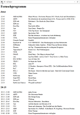

|

|
Programming: Web scraping for a custom TV-Programme
What?
This script parses an online TV programme website. It filters out the bad channels, reorders the good ones and generates a cleaned list. This cleaned list is accessable on a webserver, which it spawns itself. The webserver can be accessed from your smartphone on the local area network.
This was neccessary, because the online TV programme website has has a terrible layout, is loaded with flash advertisements, JavaScript tracking codes and popups advertisements. What ever happend to the days when Internet connections were slow and they didn't make you load all of that crap.
When?
Why?
Background?
How?
1
2
3
4
5
6
7
8
9
10
11
12
13
14
15
16
17
18
19
20
21
22
23
24
25
26
27
28
29
30
31
32
33
34
35
36
37
38
39
40
41
42
43
44
45
46
47
48
49
50
51
52
53
54
55
56
57
58
59
60
61
62
63
64
65
66
67
68
69
70
71
72
73
74
75
76 | # dsalzner 2015-12-16-Sa
from BeautifulSoup import BeautifulSoup as Soup
import urllib
import HTMLParser
h = HTMLParser.HTMLParser()
from flask import Flask, Response
app = Flask(__name__)
senderFilter = [
"ARD ALPHA", "ARTE", "ZDF info", "ZDF neo", "Eins Plus", "3sat",
"N24", "NTV", "ARD", "ZDF", "VIVA", "Comedy Central",
"EinsFestival", "ZDFkultur", "Phoenix", "Tagesschau24", "NICK", "DMAX",
"sixx", "RTL NITRO", "TELE 5", "RTL", "SAT.1", "Pro7",
"RTL 2", "VOX", "Kabel eins", "Super RTL", "Servus TV", "Kabel eins Classics"
]
programmAuswahl = [
(0, "Jetzt"),
(1, "20:15"),
(2, "22:00"),
]
def parse(link):
soup = Soup(urllib.urlopen(link))
data = []
for idx, broadcast in enumerate(soup.findAll("table", { "class" : "broadcasts" })):
for tr in broadcast.findAll("tr"):
sender = ""
zeit = ""
titel = ""
for station in tr.findAll("td", { "class" : "smallStation" }):
sender = h.unescape(station.contents[0].strip())
for time in tr.findAll("td", { "class" : "smallTime" }):
for a in time.findAll("a"):
zeit = h.unescape(a.contents[0].strip())
for title in tr.findAll("td", { "class" : "smallTitle" }):
for a in title.findAll("a"):
titel = h.unescape(a.contents[0].strip())
data.append((idx, zeit, sender, titel))
return data
def programm():
p1 = parse("http://www.klack.de/?typeID=-3&typeName=all")
p2 = []
for s in senderFilter:
p = [x for x in p1 if s == x[2]]
p2.extend(p)
text = "<html><body><h1>Fernsehprogramm</h1>"
for a in programmAuswahl:
(id, titel) = a
text += "<h2> " + titel + "</h2><table>"
p3 = [x for x in p2 if bool(set([id]).intersection(set([x[0]])))]
for p in p3:
(idx, zeit, sender, titel) = p
text += "<tr><td width=""120px"">" + zeit[0:20] + "</td><td width=""150px"">" + sender[0:20] + "</td><td width=""550px"">" + titel[0:70] + "</td></tr>"
text += "</table>"
text += "</body></html>"
print text
return text
@app.route('/')
def seite():
return Response(programm(), mimetype="text/html")
if __name__ == '__main__':
app.run(port=80, debug=True)
|
Progress?
|